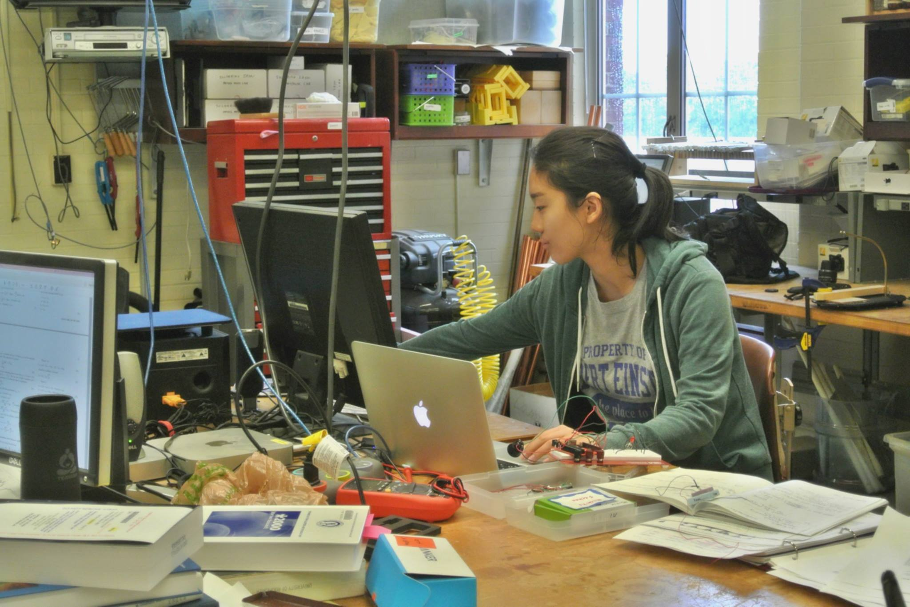
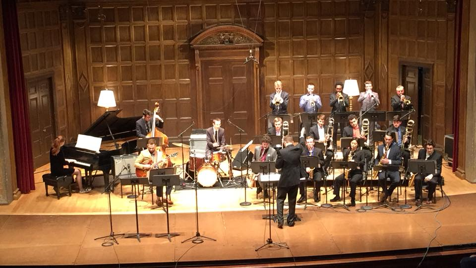

Michiko Feehan
B.S. Biomedical Engineering
University of Rochester
During my undergrad, I participated in a physics REU (on an interdisciplinary project with the mechanical engineering, biomedical engineering,
physics, & computer science departments) where I designed & executed experiments to validate existing and predicted models with the goal of
understanding the robotic physics of non-biologically inspired locomotion strategies in complex media. Through this project I learned various hardware and software for simulation,
computational modleing, & development: including arduino for programming a circuit board and abaqus for finite element analysis. I ran efficient simulations &
picked up modeling skills to analyze real-world systems.
I also worked for the simulation lab at the University Hospital where I designed and engineered patient specific and general models used for
surgical practice for the Da Vinci Surgical System (a robotic assisted surgical system). I performed mechanical testing, 3D printing,
Solidworks (computer aided design), CT analysis, and studied relavant surgical techniques that would be used on these models.
(And if you thought that wasn't keeping me occupied) During the last two years of my undergrad, I worked in a research lab at the Center for
Translational Neuromedicine on research for the development of novel approaches in curing neurological diseases and the study of neurogenesis in adults.
Additionally, I have a strong background and passion for saxophone performance.
During my first year of undergrad, I studied classical saxophone with Nicki Roman. Soon after, I began my studies in jazz saxophone with Doug Stone with whom I have now studied privately with for over 4 years. I have also gained experience through a variety of performing opportunities. I was lead alto saxophone in the Eastman Jazz Workshop Ensemble at the Eastman School & lead alto in the river campus jazz ensemble. I also performed in smaller jazz combos.

Click below to view my Theatre Reviews: